Fun with Govee - Part II
It has been a while since I wrote my first blog post about the Govee global account takeover. As some might have guessed from the URL of the first post, a second part was planned, and after a longer summer break - here it is!
If you don’t know what this post is about, please read the introduction of my first blog post Groovy Govee Account Takeover
This part mainly focuses on two topics that I wanted to learn more about on my little IoT adventure:
- Hardware Analysis (Govee H6054)
- Mobile Application Analysis (Govee Home)
Let’s dive right in!
Hardware Analysis
The Govee H6054 has two interesting circuit boards, the control unit (detailed view) and the camera unit (detailed view). After disassembling all the plastic I was greeted with lots of different connectors.
{kind=link}
{kind=link}
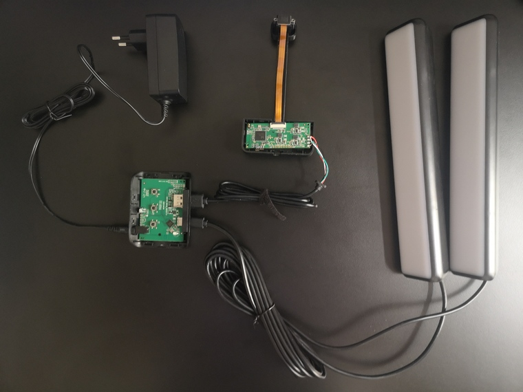
Luckily, a few of them were labeled, often with GND,RX,TX. Since this sounded a lot like UART, I unpacked my freshly bought BusPirate and started testing.
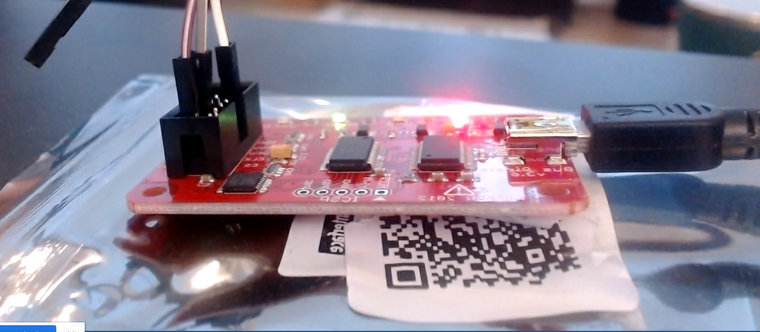
Once the baud rate was right, a mixture of text and binary blobs was printed on the screen. I assumed that I was watching the internal communication between the two boards because the UART interfaces on both boards printed exactly the same data.
After testing a few UART interfaces, I noticed a line of six test pads connected to the main chip on the camera’s board. Hoping for a JTAG interface, I tried to probe the pads, but without a PCBite kit I was not able to get a solid physical connection. Luckily, a good friend of mine has far better soldering skills than I do and helped me out.
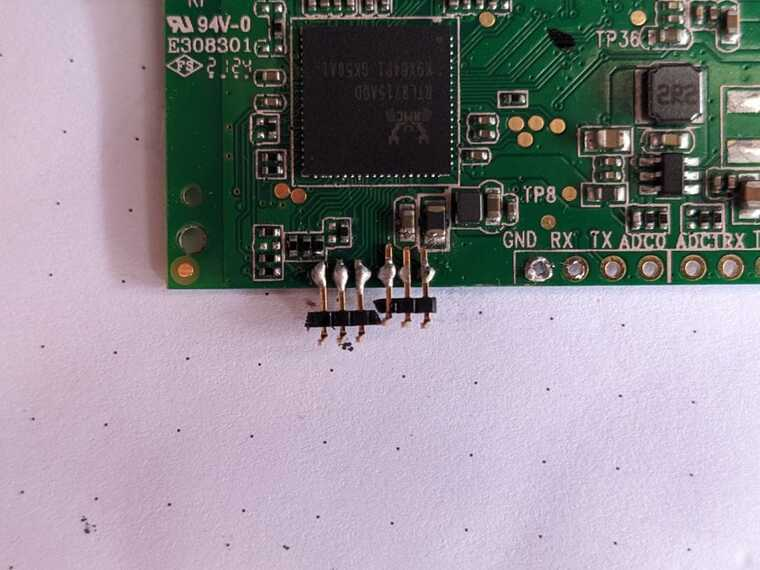
With the connectors soldered, one problem is solved, but another occoured. The test pads are not labeled. Therefore, we needed to find out which signal connects to which pad. It was time to play around with the JTAGulator to probe the test pads. Since the JTAGulator was not able to identify any pads I decided to do some research on the chip. The exact data sheet was not available, but a similar chip suggested an SWD (serial wire debug) interface.
So I ran the JTAGulator again this time to find a possible SWD interface.
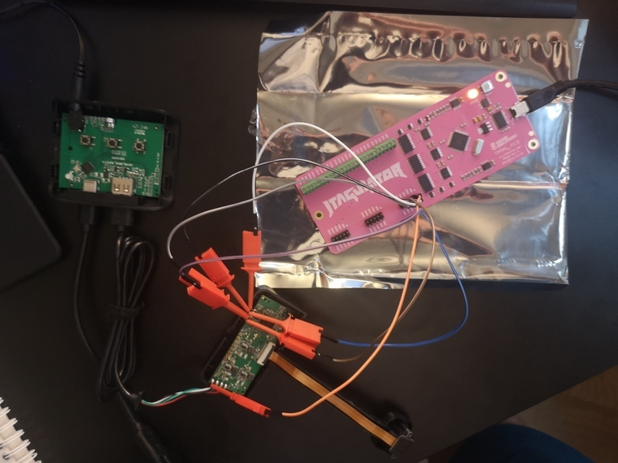
Long story short, it did not work! I still didn’t know if there was a JTAG or SWD around, but at least I couldn’t find it. Maybe there was some kind of reset-magic implemented or a broken solder joint prevented success on this issue (the soldered connector was delivered >700km and crossed a border).
Circling back to my previous attempt and testing for UART finally brought the breakthrough!
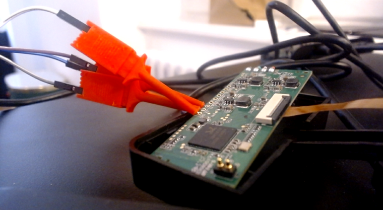
Restarting the device while listening to the right UART interface showed me tons of output, including my clear text WiFi credentials. Take care if you plan to get rid of your device or if other people have access to it!
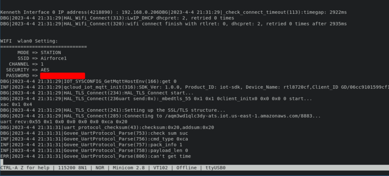
But it got even better. After finishing the boot process, I was greeted with a mysterious password prompt. A very long and exhausting manual brute-force attack with three attempts revealed that the password to GoveeShell heaven was simply: govee
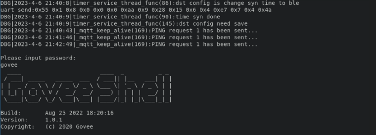
Enjoy your shell and play around :-)
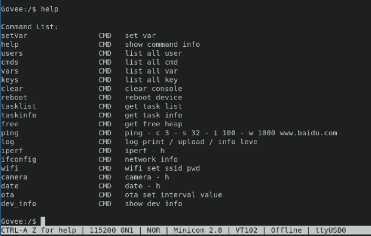
Android Application Analysis
The Govee Home Android application analysis consisted mainly of two parts:
- Dynamic hooking with objection and frida
- Decompiling the source code to manually find interesting things
The first approach was where I spent most of my time with. Playing around with hooks and multiple functions, especially with everything that involved AWS IoT communication via MQTTS, was lots of fun. Unfortunately, the hooking was quite buggy and did not always work as expected. But from what I saw the MQTTS setup looked quite solid. The Govee MQTTS endpoint (aqm3wd1qlc3dy-ats.iot.us-east-1.amazonaws.com) is described in an IoT research paper from the Indiana University Bloomington (URL in references). They also reported their findings to Govee, so maybe that’s why I didn’t find any low-hanging fruit.
After spending a good amount of time on it, I decided to move forward and statically analyze the Govee Home app. The application is huge (over 100MB) and has specific source code for almost every Govee device or device family.
Digging around on interesting source code that involves my own Govee H6054 was fun, but after a while I decided to go for some good old grep magic and was not disappointed.
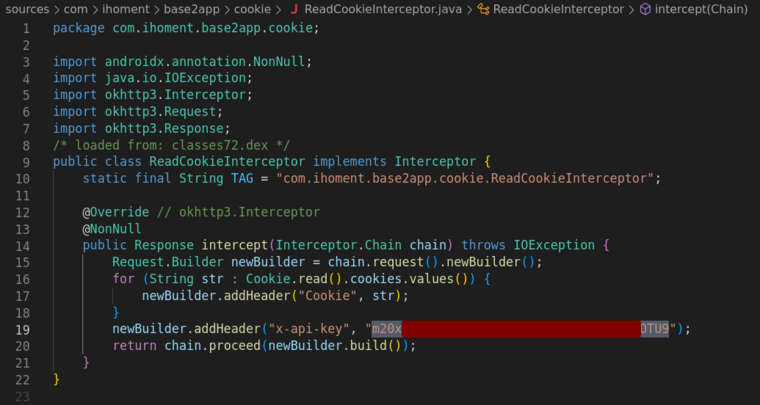
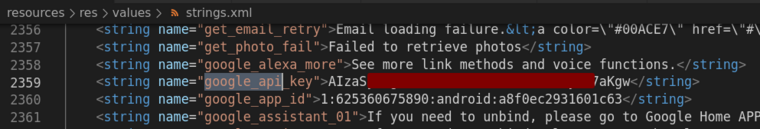
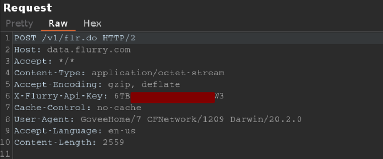
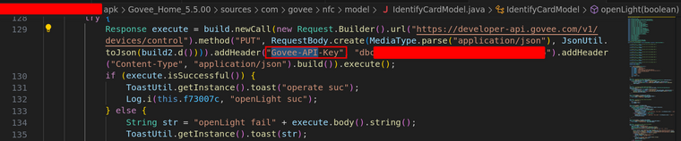
The Govee-Api-Key immediately caught my attention as I had been reading about the Govee developer API previously. Basically, anybody with a Govee Home account can request their personal API token to control owned devices via HTTP. But why was one of those API keys in the source code? Does it still work? Who is the owner of the key?
One Burp request later I got my answer:
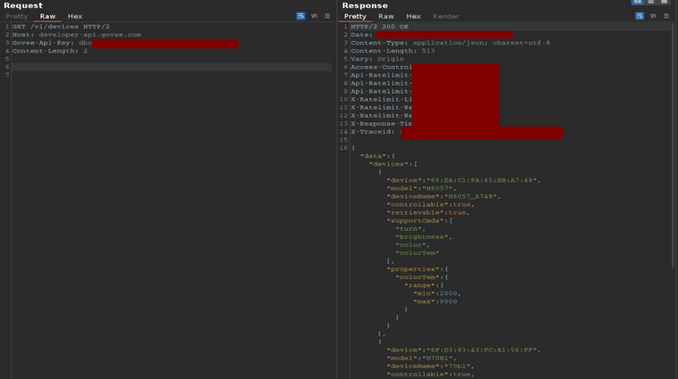
The API key still worked and had two connected devices (H6057 & H70B1). Both devices were turned on and controllable via the interface. Even more interesting was the fact that the H70B1 device wasn’t even on the market during this research. Therefore, I could only assume that this API key came from a developer and had ended up in the source code by mistake.
Conclusion
The hardware and Android analysis revealed multiple vulnerabilities. An attacker with physical access is able to exfiltrate the WiFi password and can change the device settings via the weak password protected GoveeShell (UART shell). The Android APK revealed multiple API keys, one of them allowed to control foreign devices of an unknown person.
All findings were sent to the Govee security team on 6th of June 2023. They thanked me for my work, encouraged me to share more in the future, and assured me that they would fix the vulnerabilities as soon as possible.
Timeline
- 06.06.2023: Sending vulnerabilities to Govee security team
- 07.06.2023: Acknowledgement Govee and start of their investigation
- 15.07.2023: Progress update by Govee. Planned update on 17th of July to fix most of the vulnerabilities
- 07.09.2023: Asking Govee if they want to deactivate the API key before I publish this blog post
- 08.09.2023: API key deactivated by Govee